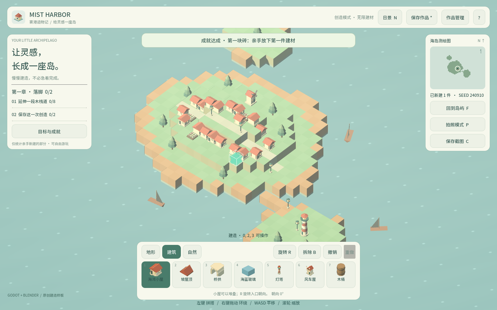
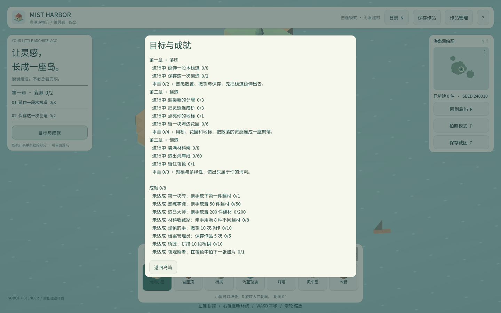

卷 4 · 第 23 章 成就系统：从定义到解锁的完整链路
本章目标：打通"成就"这条链路——定义在哪、进度怎么算、
解锁怎么通知、写盘为什么必须延后（第 13 章的续集）。
对应任务：T30 | 对应文件：scripts/achievements.gd、data/achievements.json
23.1 两端分离：定义 vs 状态
| 位置 | 内容 | |
|---|---|---|
| --- | --- | --- |
| 定义 | res://data/achievements.json | 8 条：id / title / description / kind / target |
| 状态 | user://achievements.json | {schema_version, unlocked: {id: 时间}} |
为什么分开？
- 定义是游戏内容，随版本走，可随时增删
- 状态是玩家数据，属于玩家不属于存档槽（第 13 章）
23.2 进度计算：一个函数覆盖所有 kind
func progress_value(kind: String, model, photos: Dictionary) -> int:
if kind == "total": return model.placed_count()
if kind == "variety": return 用了几种建材
if kind == "undone": return model.stats["undone"]
if kind == "saved": return model.stats["saved"]
if kind == "night_photo": return photos["night_photos"]
if kind.begins_with("kind:"):
return model.player_counts().get(kind.substr(5), 0)
return 0| kind | 含义 | 例子 |
|---|---|---|
| --- | --- | --- |
total | 累计放置数 | 熟练学徒 50 / 造岛大师 200 |
variety | 用过的建材种类 | 材料收藏家 8 |
undone | 撤销次数 | 谨慎的手 10 |
saved | 保存次数 | 档案管理员 5 |
night_photo | 夜景照片数 | 夜观察者 1 |
kind:<id> | 某建材的数量 | 桥匠 kind:arch 10 |
📌
kind:前缀让"按建材计数"这类成就不需要写代码——
新增一种建材，就能新增一条成就，只改 JSON。
23.3 评估与通知
func evaluate(model, photos) -> Array:
var fresh := []
for entry in entries:
if id == "" or unlocked_at.has(id): continue # 已解锁跳过
if progress_value(...) >= int(entry["target"]):
unlocked_at[id] = Time.get_datetime_string_from_system(true)
fresh.append(entry)
if not fresh.is_empty(): _pending_flush = true
return fresh调用点在 main.gd：
func _check_achievements() -> void:
for entry in achievements.evaluate(model, photo_stats):
_on_achievement_unlocked(entry)
func _on_achievement_unlocked(entry) -> void:
_toast("成就达成 · %s：%s" % [...], 4.5)链路：_refresh_ui() → _check_achievements() → evaluate() →
新解锁 → unlocked 信号 / 返回值 → toast 提示。
📌 评估是在 UI 刷新时顺带做的，不是每帧轮询——省开销且时机自然。
23.4 写盘：为什么必须延后（重点回顾）
# Web writes to user:// asynchronously (IndexedDB): writing this file AFTER a
# world save loses the save. So unlocks are only flushed immediately BEFORE a
# world save (main.gd calls flush()) or when the app closes.
var _pending_flush := false解锁 → 只改内存 + _pending_flush = true
玩家 Ctrl+S → main.gd 先 achievements.flush() → 再写世界存档
关闭窗口 / 返回键 / 对象销毁 → flush()三个退出钩子都挂上了 flush：
func _notification(what):
if what == NOTIFICATION_WM_CLOSE_REQUEST or what == NOTIFICATION_WM_GO_BACK_REQUEST:
flush()
if what == NOTIFICATION_PREDELETE:
flush()WM_GO_BACK_REQUEST 是移动端返回键——Web/移动端最容易漏的就是它。
23.5 成就与目标的分工
| 章节目标（第 22 章） | 成就 | |
|---|---|---|
| --- | --- | --- |
| 数据 | objectives.json | achievements.json |
| 状态 | 不保存（每次重算） | 保存（跨会话累计） |
| 语义 | 当前作品的进度 | 玩家的累计行为 |
| 回退 | 撤销/拆除会回退 | 不会回退（撤销次数反而 +1） |
📌 一句话：目标问"你这座岛现在怎么样"，成就问"你玩了多久、怎么玩"。
🌩 在云端 agent（web-cb）里是什么样
| 🖥 本地路线 | 🌩 云端 agent（web-cb） | |
|---|---|---|
| --- | --- | --- |
| 定义/状态 | res:// + user:// | 同 |
| 写盘顺序 | 本地近同步，可能不复现 | Web/IndexedDB 异步，最容易复现这个坑 |
| 验证 | 手动 | 建议做组合用例：解锁成就 → 立即存档 → 刷新 → 两者都在 |
| 风险 | 低 | 高：偶发丢档是这类 bug 的典型表现 |
🌩 这条链路在云端必须专门验一次。它跨了"写盘顺序 + 平台异步"两件事，
单测永远测不到，只有真实浏览器能暴露（第 30 章）。
23.6 常见坑速查（本章）
| 现象 | 原因 | 处理 |
|---|---|---|
| --- | --- | --- |
| 解锁后存档丢失 | 写盘顺序反了 | 存档前先 flush() |
| 换槽位成就没了 | 存进了存档槽 | 成就存 user://，与槽位无关 |
| 关窗口后成就没保存 | 没接 WM_CLOSE_REQUEST | 挂 flush |
| 移动端返回后丢失 | 漏了 WM_GO_BACK_REQUEST | 同上 |
| 成就进度不涨 | kind 拼错 | 注意 kind: 前缀与 substr(5) |
| 撤销后成就回退 | 用错了数据源 | 成就用累计 stats，不用当前 cells |
23.7 本章作业
- 画出成就链路：谁调用
evaluate()、解锁后谁提示、谁负责写盘 - 说出三个 flush 时机，并说明移动端返回键为什么要单独处理
- 新增一条成就：
kind: "kind:barrel"、target: 5，验证进度与解锁 - 对比"章节目标"与"成就"，说明为什么一个不保存、另一个必须保存
🎓 教学提示（给教师 / 直播主）
- 概念锚点：语义决定存储方式——"当前态"重算，"累计态"持久化。
- 课堂演示：在浏览器里解锁成就 → 立即存档 → 刷新，验证两者都在（这正是 L3 的用例）。
- 高频误解：学生把成就存进存档槽。追问：换槽位该不该丢成就？
- 讨论题：如果要加"隐藏成就"（解锁前不显示描述），数据要加什么字段？
- 批改要点：作业 4 要说出"当前作品 vs 玩家累计"的区别。
🖼 本章图集


📹 录屏分镜（9 分钟）
| 时间 | 画面 | 解说词要点 |
|---|---|---|
| --- | --- | --- |
| 00:00–01:40 | 定义 vs 状态两张表 | "内容归内容，玩家归玩家。" |
| 01:40–03:20 | progress_value 的 kind 分支 | "kind: 前缀让新成就零代码。" |
| 03:20–05:00 | evaluate → toast 链路 | "顺带评估，不每帧轮询。" |
| 05:00–07:00 | 写盘顺序图 + 三个 flush 钩子 | "先 flush 再存档，反了丢档。" |
| 07:00–09:00 | 目标 vs 成就分工 + 作业 |
🎬 视频位（待录制）
把录好的视频放到course/media/video/23/（mp4 / webm / mov），重新执行 python tools/course_build.py 即会自动内嵌；首帧默认用本章第一张截图作为封面。分镜脚本见上一节。🖼 配图清单
| 文件名 | 内容 | 生成方式 |
|---|---|---|
| --- | --- | --- |
23-progress-achievements.png | 进度面板里的成就区（含进度） | python tools/course_capture.py --chapter 23 |
23-achievement-toast.png | 解锁成就的提示条 | 同上 |
🎥 直播脚本（L3 片段，12 分钟）
- 开场："存档神秘消失案"——回顾排查过程（第 13 章伏笔回收）
- 演示：在浏览器里复现"顺序反了就丢档"
- 互动：观众投票决定新增哪项成就（大纲里的 L5 环节）
- 收尾：预告截图与摄影模式
❓ 本章 FAQ
Q：成就解锁时间记来干嘛？
A：unlocked_at[id] = 时间字符串，便于展示"何时达成"，也是调试与排序依据。
Q：能重置成就吗？
A：删掉 user://achievements.json 即可（各平台路径见第 13 章 FAQ）。
Q：variety 用的是 player_counts() 吗？
A：是——只统计非 natural 的格子，所以起始村庄不会白送成就。